Charades · Hard · page 10/12 · all packs
Reject an image by adding its slug to public/charades/charades-hard/reject.txt (append ! to keep it word-only), then re-run node scripts/genimages.mjs.
1 2 3 4 5 6 7 8 9 10 11 12 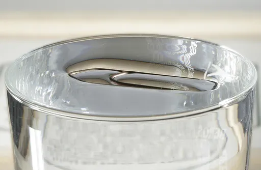
Surface tension surface-tensionCC BY-SA 3.0 · Kuebi Armin Kübelbeck · source 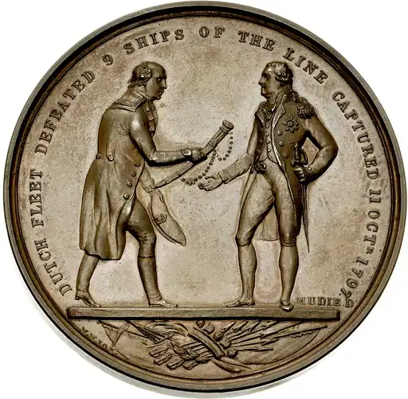
Surrender surrenderCC0 · William Wyon · source Suspense suspenseCC0 · REIHANEB · source 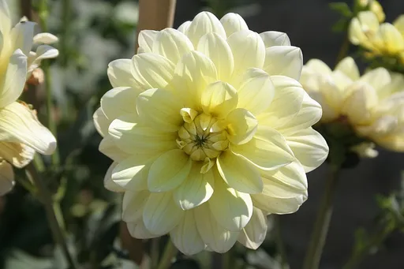
Sympathy sympathyCC BY 2.5 · Loïc Evanno · source 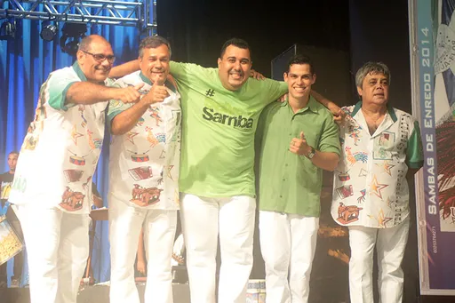
Teamwork teamworkCC BY-SA 4.0 · Fotógrafo Henrique Matos · source 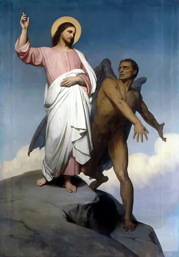
Temptation temptationPublic domain · Ary Scheffer · source 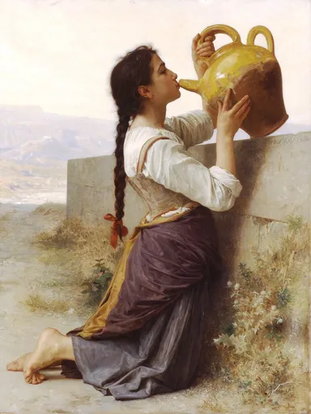
Thirst thirstPublic domain · William-Adolphe Bouguereau · source 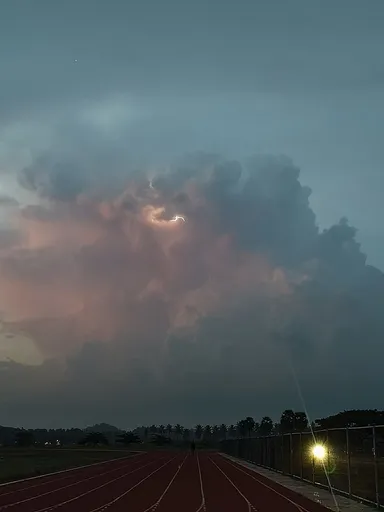
Thunder thunderCC0 · MuthuLakshmi Vijaya · source 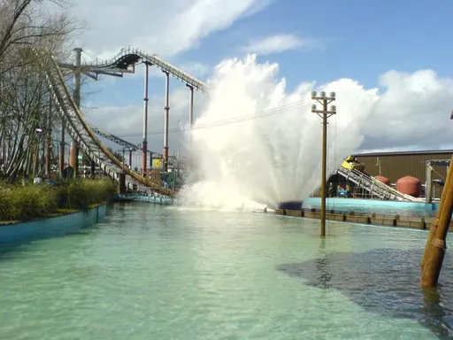
Tidal wave tidal-waveCC BY-SA 2.0 · Hywel Williams · source 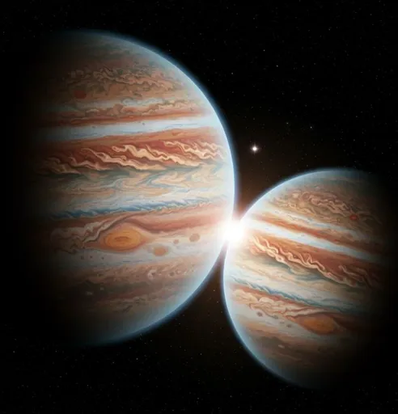
Time travel time-travelCC BY 4.0 · Cloud899 · source 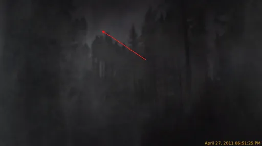
Tornado tornadoCC0 · Eoline · source Tradition traditionCC BY-SA 4.0 · Yann (talk) · source 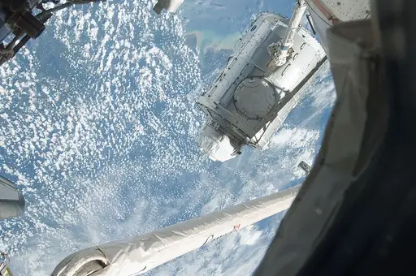
Tranquility tranquilityPublic domain · NASA · source 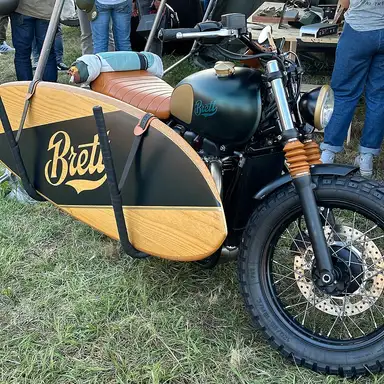
Triumph triumphCC BY-SA 4.0 · Leo October · source Trust trustPublic domain · Inconnu · source 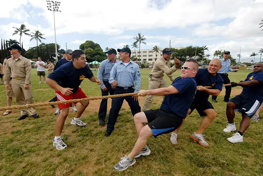
Tug of war tug-of-warPublic domain · U.S. Navy photo by Mass Communication Specialist 1st Class James E. Foehl · source 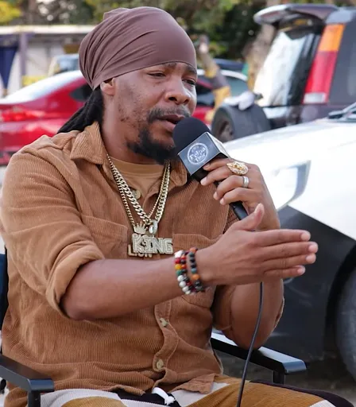
Turbulence turbulenceCC BY 3.0 · Pelpa Time Production · source word only
Uncertainty uncertaintyword only
Underdog underdogword only
Unity unity1 2 3 4 5 6 7 8 9 10 11 12